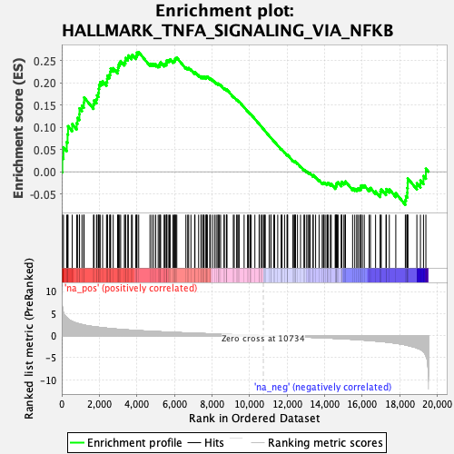
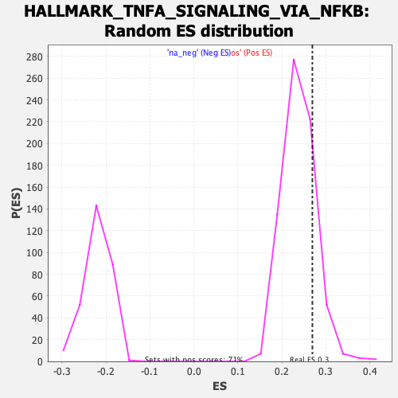

| | | Dataset | PFS |
| Phenotype | NoPhenotypeAvailable |
| Upregulated in class | na_pos |
| GeneSet | HALLMARK_TNFA_SIGNALING_VIA_NFKB |
| Enrichment Score (ES) | 0.26926127 |
| Normalized Enrichment Score (NES) | 1.1298336 |
| Nominal p-value | 0.16737589 |
| FDR q-value | 0.51046103 |
| FWER p-Value | 1.0 |
Table: GSEA Results Summary

Fig 1: Enrichment plot: HALLMARK_TNFA_SIGNALING_VIA_NFKB
Profile of the Running ES Score & Positions of GeneSet Members on the Rank Ordered List
| SYMBOL | RANK IN GENE LIST | RANK METRIC SCORE | RUNNING ES | CORE ENRICHMENT | | 1 | CD44 | 33 | 6.548 | 0.0316 | Yes |
| 2 | PLAU | 91 | 5.226 | 0.0552 | Yes |
| 3 | EGR2 | 266 | 4.070 | 0.0669 | Yes |
| 4 | IFIH1 | 310 | 3.908 | 0.0846 | Yes |
| 5 | EDN1 | 335 | 3.794 | 0.1026 | Yes |
| 6 | BTG1 | 557 | 3.191 | 0.1074 | Yes |
| 7 | PANX1 | 795 | 2.824 | 0.1095 | Yes |
| 8 | NFKB2 | 838 | 2.761 | 0.1214 | Yes |
| 9 | SERPINB8 | 939 | 2.648 | 0.1297 | Yes |
| 10 | CCRL2 | 946 | 2.637 | 0.1428 | Yes |
| 11 | GADD45B | 1077 | 2.500 | 0.1488 | Yes |
| 12 | MSC | 1174 | 2.388 | 0.1560 | Yes |
| 13 | GEM | 1191 | 2.379 | 0.1672 | Yes |
| 14 | PTGER4 | 1690 | 2.032 | 0.1518 | Yes |
| 15 | EHD1 | 1719 | 2.017 | 0.1606 | Yes |
| 16 | RELB | 1849 | 1.946 | 0.1639 | Yes |
| 17 | NFKB1 | 1880 | 1.931 | 0.1721 | Yes |
| 18 | SQSTM1 | 1956 | 1.893 | 0.1779 | Yes |
| 19 | IL12B | 1974 | 1.882 | 0.1866 | Yes |
| 20 | RELA | 1990 | 1.870 | 0.1953 | Yes |
| 21 | CDKN1A | 2047 | 1.837 | 0.2018 | Yes |
| 22 | OLR1 | 2177 | 1.778 | 0.2041 | Yes |
| 23 | LDLR | 2384 | 1.693 | 0.2021 | Yes |
| 24 | IL18 | 2418 | 1.674 | 0.2089 | Yes |
| 25 | CXCL11 | 2436 | 1.666 | 0.2165 | Yes |
| 26 | F2RL1 | 2552 | 1.616 | 0.2187 | Yes |
| 27 | TNIP2 | 2581 | 1.605 | 0.2255 | Yes |
| 28 | JUN | 2605 | 1.594 | 0.2324 | Yes |
| 29 | CXCL1 | 2741 | 1.542 | 0.2332 | Yes |
| 30 | NINJ1 | 2974 | 1.456 | 0.2286 | Yes |
| 31 | BTG2 | 3000 | 1.447 | 0.2347 | Yes |
| 32 | SOD2 | 3026 | 1.438 | 0.2407 | Yes |
| 33 | PER1 | 3081 | 1.419 | 0.2452 | Yes |
| 34 | CSF1 | 3138 | 1.398 | 0.2494 | Yes |
| 35 | TSC22D1 | 3335 | 1.339 | 0.2460 | Yes |
| 36 | BCL3 | 3388 | 1.325 | 0.2501 | Yes |
| 37 | CXCL3 | 3398 | 1.322 | 0.2564 | Yes |
| 38 | REL | 3517 | 1.287 | 0.2568 | Yes |
| 39 | PPP1R15A | 3546 | 1.274 | 0.2618 | Yes |
| 40 | TIPARP | 3713 | 1.224 | 0.2595 | Yes |
| 41 | CCL2 | 3758 | 1.213 | 0.2634 | Yes |
| 42 | TNFSF9 | 3944 | 1.163 | 0.2597 | Yes |
| 43 | BIRC3 | 3992 | 1.148 | 0.2631 | Yes |
| 44 | TAP1 | 4005 | 1.144 | 0.2683 | Yes |
| 45 | CCNL1 | 4098 | 1.124 | 0.2693 | Yes |
| 46 | ATP2B1 | 4699 | 0.979 | 0.2432 | No |
| 47 | NR4A1 | 4797 | 0.956 | 0.2430 | No |
| 48 | PTPRE | 4895 | 0.938 | 0.2428 | No |
| 49 | PLEK | 5003 | 0.917 | 0.2419 | No |
| 50 | B4GALT1 | 5134 | 0.892 | 0.2397 | No |
| 51 | IL15RA | 5214 | 0.875 | 0.2401 | No |
| 52 | SOCS3 | 5230 | 0.870 | 0.2437 | No |
| 53 | TRIB1 | 5267 | 0.863 | 0.2463 | No |
| 54 | MAFF | 5449 | 0.826 | 0.2411 | No |
| 55 | ZFP36 | 5494 | 0.815 | 0.2430 | No |
| 56 | INHBA | 5567 | 0.802 | 0.2433 | No |
| 57 | CD83 | 5573 | 0.801 | 0.2471 | No |
| 58 | ZC3H12A | 5587 | 0.798 | 0.2505 | No |
| 59 | SPSB1 | 5662 | 0.784 | 0.2507 | No |
| 60 | CCL20 | 5732 | 0.773 | 0.2511 | No |
| 61 | NAMPT | 5772 | 0.766 | 0.2529 | No |
| 62 | PNRC1 | 5922 | 0.739 | 0.2490 | No |
| 63 | KLF9 | 5982 | 0.728 | 0.2496 | No |
| 64 | ABCA1 | 6020 | 0.721 | 0.2514 | No |
| 65 | TNFAIP8 | 6040 | 0.715 | 0.2540 | No |
| 66 | CCL5 | 6077 | 0.709 | 0.2558 | No |
| 67 | TANK | 6127 | 0.699 | 0.2568 | No |
| 68 | SMAD3 | 6611 | 0.616 | 0.2349 | No |
| 69 | LIF | 6708 | 0.599 | 0.2330 | No |
| 70 | IFNGR2 | 6758 | 0.592 | 0.2335 | No |
| 71 | DENND5A | 6879 | 0.570 | 0.2302 | No |
| 72 | CD69 | 7076 | 0.538 | 0.2228 | No |
| 73 | MARCKS | 7094 | 0.535 | 0.2246 | No |
| 74 | EIF1 | 7289 | 0.502 | 0.2171 | No |
| 75 | PMEPA1 | 7415 | 0.482 | 0.2131 | No |
| 76 | RIPK2 | 7433 | 0.480 | 0.2147 | No |
| 77 | FOSL1 | 7528 | 0.464 | 0.2122 | No |
| 78 | BCL2A1 | 7541 | 0.461 | 0.2139 | No |
| 79 | TNF | 7582 | 0.454 | 0.2141 | No |
| 80 | G0S2 | 7680 | 0.439 | 0.2114 | No |
| 81 | CEBPD | 7695 | 0.436 | 0.2129 | No |
| 82 | MYC | 7711 | 0.434 | 0.2143 | No |
| 83 | SDC4 | 7755 | 0.426 | 0.2142 | No |
| 84 | CXCL2 | 7883 | 0.408 | 0.2097 | No |
| 85 | NFKBIE | 7908 | 0.405 | 0.2105 | No |
| 86 | PLAUR | 8019 | 0.389 | 0.2068 | No |
| 87 | SAT1 | 8133 | 0.375 | 0.2029 | No |
| 88 | MCL1 | 8224 | 0.362 | 0.2001 | No |
| 89 | NFKBIA | 8320 | 0.348 | 0.1969 | No |
| 90 | NR4A3 | 8324 | 0.347 | 0.1985 | No |
| 91 | GPR183 | 8395 | 0.336 | 0.1966 | No |
| 92 | F3 | 8460 | 0.328 | 0.1950 | No |
| 93 | TRIP10 | 8641 | 0.303 | 0.1872 | No |
| 94 | MAP3K8 | 8657 | 0.300 | 0.1880 | No |
| 95 | PHLDA2 | 8768 | 0.284 | 0.1837 | No |
| 96 | TGIF1 | 8781 | 0.282 | 0.1845 | No |
| 97 | CXCL10 | 8797 | 0.279 | 0.1852 | No |
| 98 | IL1B | 9136 | 0.230 | 0.1689 | No |
| 99 | DUSP5 | 9184 | 0.223 | 0.1676 | No |
| 100 | EFNA1 | 9313 | 0.206 | 0.1620 | No |
| 101 | PLPP3 | 9342 | 0.202 | 0.1616 | No |
| 102 | BTG3 | 9419 | 0.190 | 0.1586 | No |
| 103 | KLF2 | 9445 | 0.186 | 0.1582 | No |
| 104 | IRS2 | 9711 | 0.147 | 0.1453 | No |
| 105 | SPHK1 | 9894 | 0.117 | 0.1365 | No |
| 106 | NFIL3 | 9935 | 0.112 | 0.1350 | No |
| 107 | TNFRSF9 | 10020 | 0.101 | 0.1311 | No |
| 108 | HBEGF | 10029 | 0.099 | 0.1312 | No |
| 109 | IL6ST | 10090 | 0.091 | 0.1286 | No |
| 110 | RHOB | 10284 | 0.064 | 0.1189 | No |
| 111 | FOS | 10511 | 0.032 | 0.1074 | No |
| 112 | SERPINE1 | 10521 | 0.031 | 0.1071 | No |
| 113 | LITAF | 10623 | 0.016 | 0.1019 | No |
| 114 | BIRC2 | 10678 | 0.008 | 0.0992 | No |
| 115 | SGK1 | 10749 | -0.003 | 0.0956 | No |
| 116 | IL7R | 10801 | -0.009 | 0.0930 | No |
| 117 | FOSL2 | 10838 | -0.013 | 0.0912 | No |
| 118 | PDE4B | 11044 | -0.042 | 0.0808 | No |
| 119 | RNF19B | 11138 | -0.055 | 0.0763 | No |
| 120 | SLC16A6 | 11140 | -0.055 | 0.0765 | No |
| 121 | TNFAIP3 | 11286 | -0.076 | 0.0694 | No |
| 122 | SLC2A3 | 11335 | -0.083 | 0.0673 | No |
| 123 | BHLHE40 | 11501 | -0.106 | 0.0593 | No |
| 124 | JUNB | 11688 | -0.134 | 0.0504 | No |
| 125 | CEBPB | 11702 | -0.136 | 0.0504 | No |
| 126 | DRAM1 | 11730 | -0.140 | 0.0497 | No |
| 127 | IER2 | 11864 | -0.159 | 0.0436 | No |
| 128 | MAP2K3 | 11996 | -0.184 | 0.0378 | No |
| 129 | CCND1 | 12014 | -0.187 | 0.0379 | No |
| 130 | IER3 | 12032 | -0.189 | 0.0379 | No |
| 131 | AREG | 12309 | -0.228 | 0.0248 | No |
| 132 | NFE2L2 | 12369 | -0.238 | 0.0230 | No |
| 133 | TRAF1 | 12406 | -0.245 | 0.0224 | No |
| 134 | KLF4 | 12433 | -0.250 | 0.0223 | No |
| 135 | VEGFA | 12445 | -0.252 | 0.0230 | No |
| 136 | NR4A2 | 12554 | -0.272 | 0.0188 | No |
| 137 | FOSB | 12715 | -0.298 | 0.0120 | No |
| 138 | RCAN1 | 12896 | -0.327 | 0.0044 | No |
| 139 | KLF6 | 12939 | -0.335 | 0.0039 | No |
| 140 | DUSP1 | 13043 | -0.352 | 0.0004 | No |
| 141 | PHLDA1 | 13112 | -0.364 | -0.0013 | No |
| 142 | CSF2 | 13183 | -0.375 | -0.0030 | No |
| 143 | FUT4 | 13235 | -0.381 | -0.0037 | No |
| 144 | B4GALT5 | 13376 | -0.405 | -0.0089 | No |
| 145 | IRF1 | 13392 | -0.408 | -0.0076 | No |
| 146 | CLCF1 | 13518 | -0.430 | -0.0119 | No |
| 147 | TUBB2A | 13703 | -0.460 | -0.0191 | No |
| 148 | BMP2 | 13868 | -0.493 | -0.0250 | No |
| 149 | GCH1 | 13928 | -0.503 | -0.0255 | No |
| 150 | MXD1 | 13956 | -0.507 | -0.0243 | No |
| 151 | HES1 | 14024 | -0.521 | -0.0252 | No |
| 152 | ACKR3 | 14121 | -0.537 | -0.0274 | No |
| 153 | PTGS2 | 14147 | -0.544 | -0.0259 | No |
| 154 | PFKFB3 | 14185 | -0.551 | -0.0250 | No |
| 155 | YRDC | 14298 | -0.571 | -0.0279 | No |
| 156 | PLK2 | 14351 | -0.579 | -0.0277 | No |
| 157 | DNAJB4 | 14563 | -0.621 | -0.0354 | No |
| 158 | CFLAR | 14572 | -0.622 | -0.0327 | No |
| 159 | TNIP1 | 14609 | -0.631 | -0.0313 | No |
| 160 | DDX58 | 14622 | -0.634 | -0.0287 | No |
| 161 | TNFAIP6 | 14637 | -0.639 | -0.0262 | No |
| 162 | KLF10 | 14677 | -0.648 | -0.0249 | No |
| 163 | JAG1 | 14714 | -0.657 | -0.0234 | No |
| 164 | TNFAIP2 | 14892 | -0.695 | -0.0291 | No |
| 165 | EGR1 | 14898 | -0.696 | -0.0258 | No |
| 166 | NFAT5 | 14904 | -0.698 | -0.0225 | No |
| 167 | SIK1 | 15024 | -0.722 | -0.0250 | No |
| 168 | DUSP4 | 15084 | -0.738 | -0.0243 | No |
| 169 | CXCL6 | 15108 | -0.743 | -0.0217 | No |
| 170 | STAT5A | 15488 | -0.833 | -0.0371 | No |
| 171 | PDLIM5 | 15602 | -0.866 | -0.0385 | No |
| 172 | GADD45A | 15706 | -0.892 | -0.0393 | No |
| 173 | KDM6B | 15767 | -0.910 | -0.0378 | No |
| 174 | TLR2 | 15858 | -0.935 | -0.0377 | No |
| 175 | IL6 | 15925 | -0.952 | -0.0363 | No |
| 176 | ICOSLG | 15926 | -0.952 | -0.0314 | No |
| 177 | IER5 | 16010 | -0.978 | -0.0307 | No |
| 178 | ATF3 | 16110 | -1.012 | -0.0307 | No |
| 179 | IFIT2 | 16369 | -1.089 | -0.0385 | No |
| 180 | SERPINB2 | 16439 | -1.117 | -0.0364 | No |
| 181 | ETS2 | 16711 | -1.216 | -0.0442 | No |
| 182 | ICAM1 | 16957 | -1.306 | -0.0503 | No |
| 183 | ID2 | 16970 | -1.311 | -0.0442 | No |
| 184 | GFPT2 | 17013 | -1.332 | -0.0396 | No |
| 185 | BCL6 | 17265 | -1.438 | -0.0453 | No |
| 186 | IL23A | 17284 | -1.445 | -0.0389 | No |
| 187 | CD80 | 17443 | -1.521 | -0.0393 | No |
| 188 | SNN | 17788 | -1.729 | -0.0483 | No |
| 189 | SLC2A6 | 18295 | -2.084 | -0.0639 | No |
| 190 | DUSP2 | 18328 | -2.116 | -0.0548 | No |
| 191 | PTX3 | 18399 | -2.192 | -0.0473 | No |
| 192 | FJX1 | 18404 | -2.195 | -0.0363 | No |
| 193 | KYNU | 18420 | -2.211 | -0.0259 | No |
| 194 | TNC | 18424 | -2.217 | -0.0147 | No |
| 195 | ZBTB10 | 18910 | -2.769 | -0.0257 | No |
| 196 | EGR3 | 19100 | -3.132 | -0.0196 | No |
| 197 | LAMB3 | 19262 | -3.642 | -0.0094 | No |
| 198 | IL1A | 19390 | -4.501 | 0.0069 | No |
Table: GSEA details [plain text format]

Fig 2: HALLMARK_TNFA_SIGNALING_VIA_NFKB: Random ES distribution
Gene set null distribution of ES for HALLMARK_TNFA_SIGNALING_VIA_NFKB